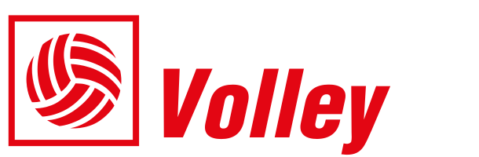
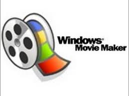
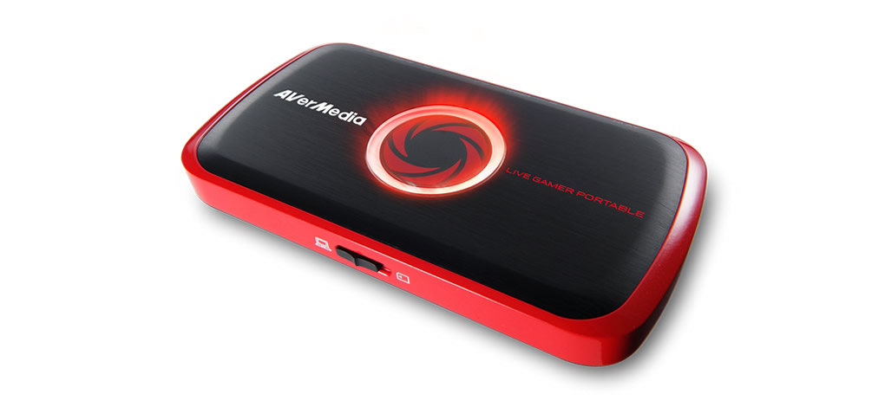

STATYSTYK, PROGRAMISTA, ADMINISTRATOR WWW.
Statystyka
Obsługa programów statystycznych:
Obsługa programów do obróbki video:
Obsługa sprzętu komputerowego i sieciowego:

Trenerzy z którymi współpracowałem: Vital Heynen, Steven Vanmedegael, Piotr Gruszka,
Mateusz Mielnik, Grzegorz Słaby, Peter Divis, Włodzimierz Madej,
Wojciech Kasperski,
Wojciech Szczuck, Marek Przybysz, Bartosz Rebza.
| Sezon | Klub | Rozgrywki | Pozycja |
|---|---|---|---|
| 2017/2018 | GKS Katowice | Plusliga | Statystyk |
| Belgia | Eliminacje Mistrzostw Świata | Statystyk | |
| 2016/2017 | GKS Katowice | Plusliga | Statystyk |
| KPS Siedlce | 1 liga | Statystyk | |
| KS Lechia Tomaszów | 2 liga | Statystyk | |
| SK Górnik Radlin | Szkoła Podstawowa | Trener | |
| 2015/2016 | GKS Katowice | I liga | Statystyk |
| SK Górnik Radlin | Szkoła Podstawowa | Trener | |
| KS Metro Warszawa | Juniorzy, kadeci | Statystyk | |
| 2014/2015 | BBTS Bielsko-Biała | Plusliga | Statystyk |
| SK Górnik Radlin | II liga | Statystyk | |
| KS Metro Warszawa | Juniorzy | Statystyk | |
| TKKF Czarni Katowice | II liga | Statystyk | |
| 2013/2014 | TS Volley Rybnik | II liga, juniorzy, młodzicy | Statystyk |
| TKS Nascon Tychy | I liga | Statystyk | |
| Aluron Warta Zawiercie | II liga | Statystyk | |
| 2012/2013 | Effector Kielce | Plusliga | Statystyk |
| TS Volley Rybnik | II liga, juniorzy | Statystyk | |
| 2011/2012 | TS Volley Rybnik | II liga, juniorzy, kadeci | Statystyk |
| 2010/2011 | TS Volley Rybnik | II liga | Statystyk |